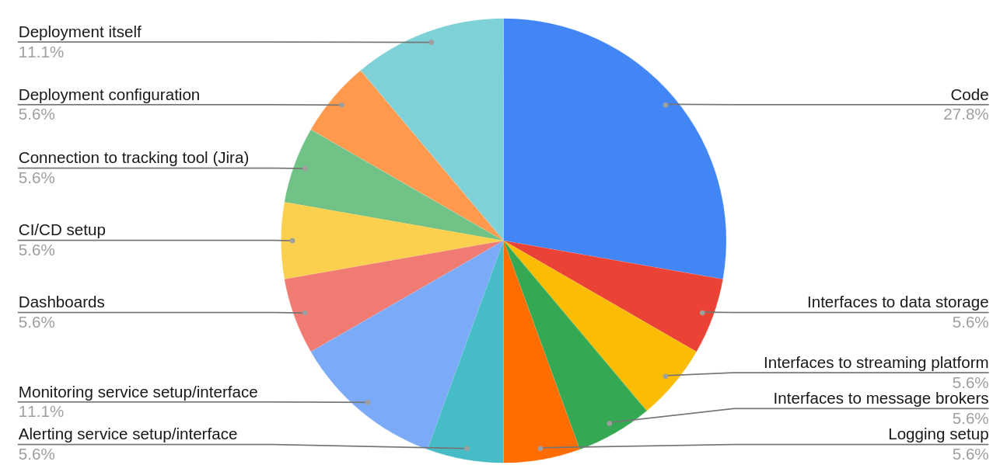

Let's suppose that developer need to create and deploy simple web
service to cloud. The implementation of that service might take some
time, let's say one day. We could argue that developer's work is done
at this point.
The problem, however, is that many other things needs to be finished
to successfully deploy such web service. Namely:
Interfaces to data storage or storages needs to be configured properly.
Interfaces to streaming platform(s) usually needs to be configured too.
Dtto if the web service has to talk with other services via some message broker.
Logging needs to be configured.
Alerts needs to be configured.
Dashboard or with service metrics needs to be created.
Connection to tracking tool.
CI/CD setup.
And the service itself needs to be deployed to selected cloud, of course.
For smaller web services (and we live in microservices world after all)
it might mean, that time to deliver the service might be five to ten
times longer than the solution (algorithm, source code) itself!

Also, many project setup and configuration is done by
copy&pasting old code from "somewhere". It would be much better to
have a more intelligent solution.
Clearly there's space for a tool that take care of all those "minor"
tasks that have to be done.